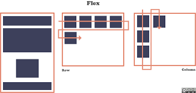

Mockup de la pagina

Segun Developer Mozilla, El Módulo de Caja Flexible, comúnmente llamado flexbox, fue diseñado como un modelo unidimensional de layout, y como un método que pueda ayudar a distribuir el espacio entre los ítems de una interfaz y mejorar las capacidades de alineación. Cuando se describe a flexbox como unidimensional se destaca el hecho que flexbox maneja el layout en una sola dimensión a la vez,ya sea como fila o como columna.

El eje principal está definido por flex-direction, que posee cuatro posibles valores:
row,row-reverse,column,column-reverse.
Si elegimos row o row-reverse, el eje principal correrá a lo largo de la fila según la dirección de la línea.
Al elegir column o column-reverse el eje principal correrá desde el borde superior de la página hasta el final — según la dirección del bloque.
El eje cruzado va perpendicular al eje principal, y por lo tanto si flex-direction (del eje principal) es row o row-reverse el eje cruzado irá por las columnas.
Si el eje principal es column o column-reverse entonces el eje cruzado corre a lo largo de las filas.
Nombre:Jhonny Lopez
Programa: Ingenieria de Sistemas
skype: vlako-117
telefono: 3042138074
email: vlako-117@hotmail.com